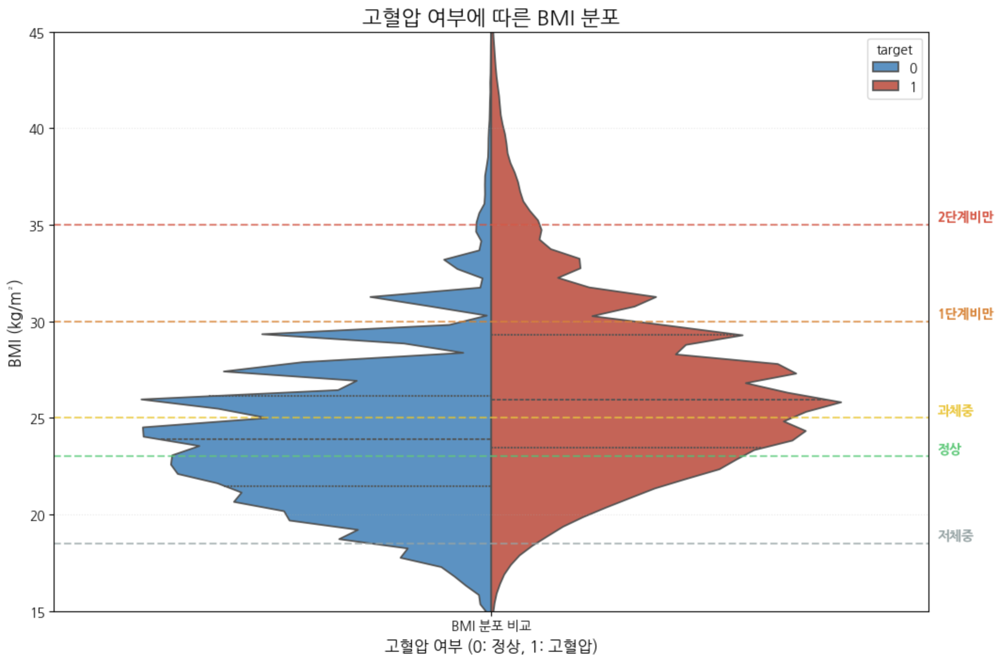
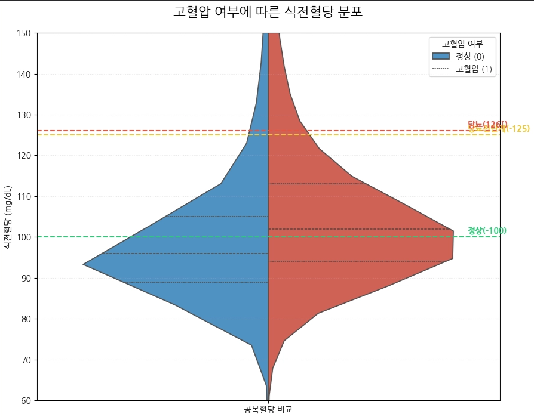
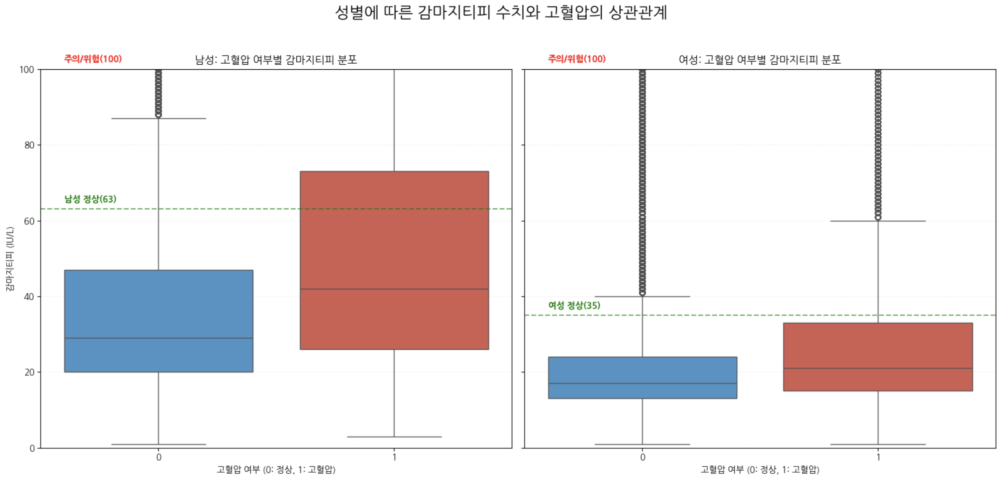

고혈압은 '침묵의 살인자'로 불리며 뇌졸중, 심근경색, 만성 신장질환 등 치명적인 합병증을 유발하는 주요 원인입니다 [1]. 증상이 나타나기 전, 일상적인 건강검진 데이터(BMI, 혈당, 간 수치 등)를 분석하여 고혈압 위험도를 예측하는 것은 조기 진단과 예방 의학적 측면에서 매우 중요한 가치를 지닙니다.
본 프로젝트에서는 국민건강보험공단 건강검진 데이터를 활용하여 고혈압 여부를 판별하는 이진 분류 모델을 구축하였습니다. 파이썬의 Pandas를 이용해 결측치 처리 및 변수 생성을 수행하였고, Seaborn과 Matplotlib을 활용해 신체 지표와 고혈압 사이의 상관관계를 시각적으로 입증하였습니다. 최종적으로 로지스틱 회귀(Logistic Regression) 모델을 통해 각 변수가 고혈압에 미치는 영향력을 수치화하였습니다.
로지스틱 회귀 (Logistic Regression): 고혈압 여부(0 또는 1)를 예측하는 이진 분류에 최적화되어 있으며, 각 독립 변수(BMI, 혈당 등)가 결과에 미치는 가중치를 계수(Coefficient)로 확인할 수 있어 결과의 해석력이 높기 때문에 선정하였습니다.

고혈압의 가장 강력한 위험 인자로 알려진 비만과 혈압의 관계를 분석하기 위해 바이올린 플롯을 활용하였습니다. 정상군(파란색)은 BMI 23 미만 구간에 밀집된 반면, 고혈압 환자군(빨간색)은 과체중(BMI 25)에서 1단계 비만 구간 사이에 훨씬 많은 데이터가 몰려있음을 확인하였습니다. 분포가 확연히 상향 이동(Upward Shift)된 양상을 보이며, 비만이 고혈압 발병의 핵심 결정 요인임을 입증합니다.

고혈압 환자군의 식전혈당 분포는 정상군에 비해 당뇨병 전단계 및 당뇨 확진(126mg/dL↑) 구간으로 치우쳐져 있습니다. 또한, 혈색소(Hb) 수치 분석 결과 고혈압 환자군의 최빈값이 정상인보다 약 0.2g/dL 이상 높게 형성되었습니다. 혈색소 수치의 상승은 혈액 점도를 높여 말초 혈관 저항을 증가시키므로, 혈압 상승의 간접적 원인이 될 수 있음을 확인하였습니다.

박스 플롯 비교 결과, 고혈압 환자군의 감마지티피 수치가 남성과 여성 모두에서 정상군보다 눈에 띄게 높았습니다. 임상적 위험 수치(100 IU/L)를 넘지 않더라도, 정상 범위 내에서의 상대적 고수치가 고혈압군에서 훨씬 빈번하게 나타났습니다. 이는 감마지티피가 고혈압을 유발하는 생활 습관 지표(음주, 비만 등)를 대변하고 있음을 보여줍니다.
[1] 대한고혈압학회, "2022 고혈압 진료지침", 2022.
[2] 대한당뇨병학회, "당뇨병 진료지침 2023", 2023.
[3] 대한비만학회, "비만 진료지침 2020", 2020.
[4] 보건복지부, "국민건강영양조사 제8기 결과보고서", 2021.